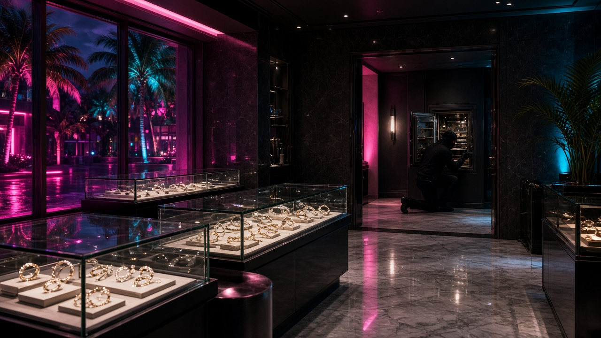

Businesses and locations
What Is the Victoria Lee Jeweler Safe Code? | Peekhole

Short answer: The safe code at Victoria Lee Jeweler in GTA 6 is 0347, according to GameRant's robbery guide. The high-end store is in Capri, and a clean job can pay up to $20,000.
How do you rob Victoria Lee Jeweler without getting caught?
- Go in the back. Park out front, then walk around to the white staff door. A Snap Gun opens it without setting off the alarm.
- Deal with the guard. One guard waits inside. Knocking him out instead of killing him keeps things tidy.
- Wipe the footage. The camera recorder sits next to the door to the shop floor. Destroy it so police do not get a good description of Jason and Lucia.
- Crack the safe. It is in the corner of the same room. Type 0347. A note with the code sits near a laptop in the next room, but you do not need it.
- Kill the alarm. Head down the hallway, handle the other guards, and switch off the alarm panel by the door.
- Hit the displays. Now the shop floor is yours.
Is there a sneakier trick?
A clip going around on X shows a player taking out guards with thrown beer bottles, with no noise and no police chase. Fans called it a true professional job.
Sources
- GameRant: Victoria Lee Jeweler robbery guide and safe code in GTA 6
- GTA6.house: Victoria Lee Jeweler robbery guide and safe code
- Cutscene Wire: How to rob Victoria Lee Jeweler in GTA 6
Peekhole take: Diamonds, a silent getaway and zero witnesses. Lucia would approve.